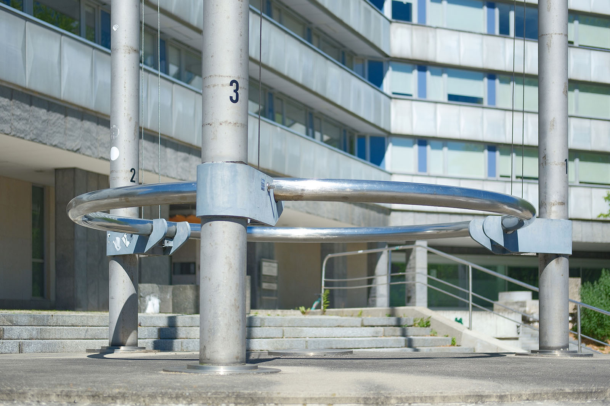
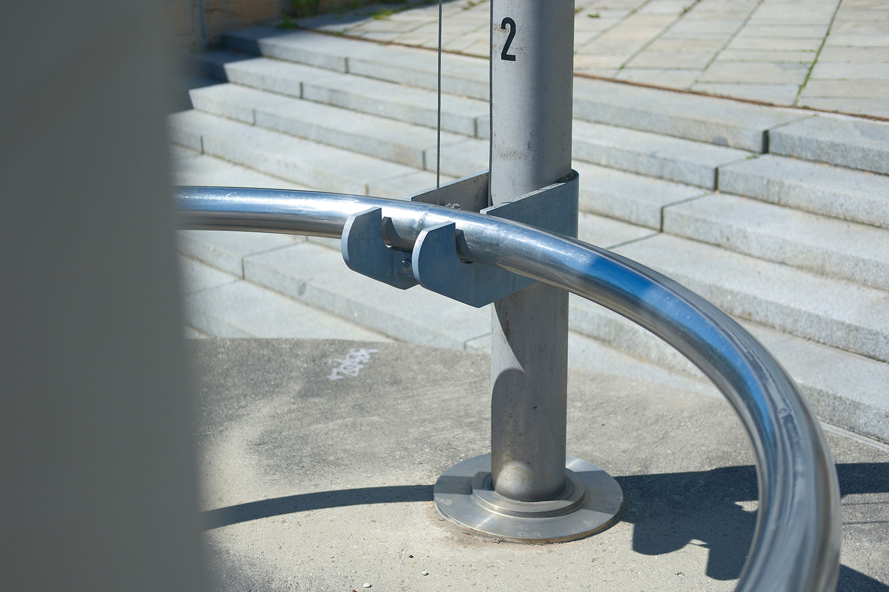
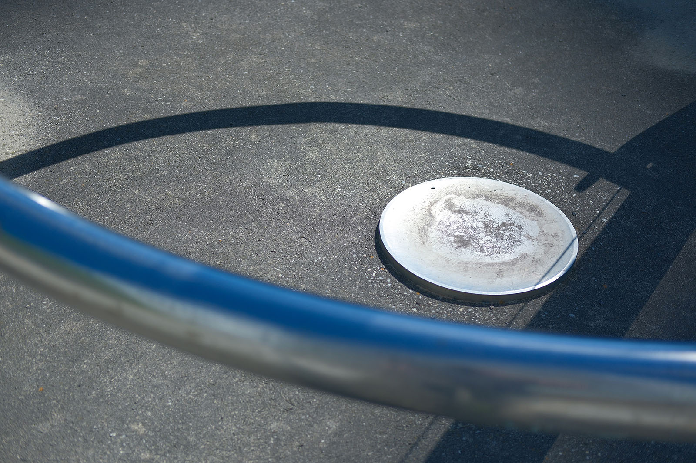
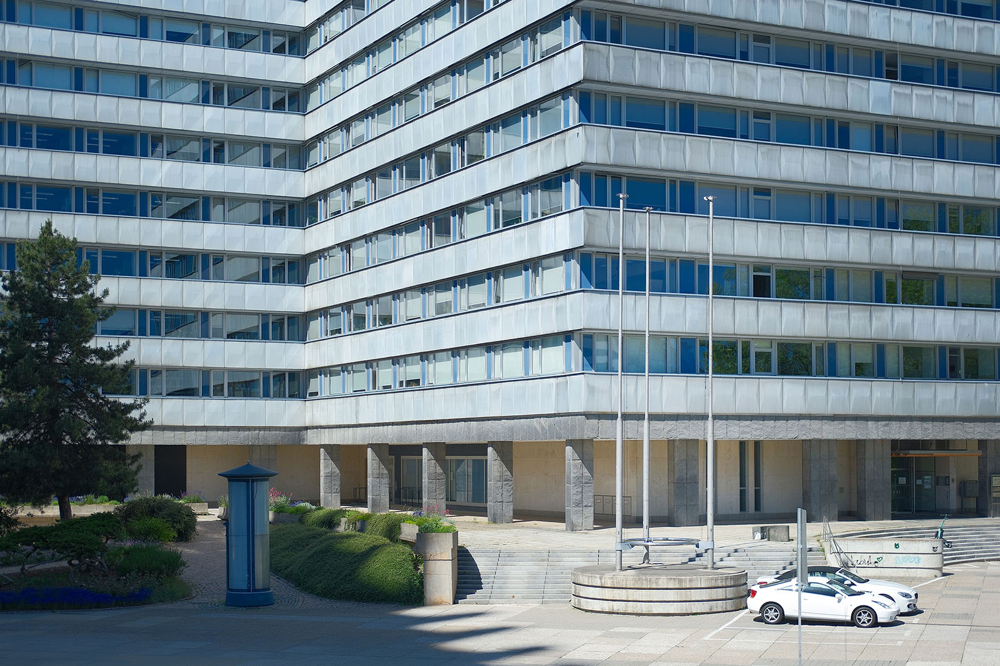

Recherche und Werkbeschreibung: Roman Pilz. Text und Fotografien wechseln sich wie in einem Magazin ab. Ein Klick auf ein Bild öffnet die Großansicht.
Das verkürzt als "Haus der Staatsorgane" bezeichnete, große Verwaltungsgebäude zwischen Straße der Nationen und Mühlenstraße wurde in zwei Bauabschnitten von 1968 bis 1979 errichtet. Es war ein zentraler staatlicher Repräsentativbau, der die Räte und Gremien der mittleren politischen Ebene der DDR beherbergte, nämlich des Bezirks Karl-Marx-Stadt. An solchen hervorgehobenen öffentlichen Gebäuden gehören Fahnen zur üblichen Ausstattung. Hier wurden diese in einer Freitreppe vor dem von 1977 bis 1979 realisierten markanten Baukörper, dessen Grundfläche wie der Buchstabe "W" im Zickzack verläuft, platziert.
Die drei Fahnenmasten ragen über 10 Meter in die Höhe. Das in zwei Segmente gegliederte Gestänge steht auf einem runden Betonfundament, das mit drei erhabenen, horizontal gelagerten Bändern und Fugen gestaltet ist. Das Fundament ist etwa brusthoch und teilweise in die breite Freitreppe eingebettet. In der Mitte des Fundaments ist eine einzelne, leicht konkave Edelstahlscheibe platziert, die im Durchmesser den flachen, einfach abgestuften Manschetten an der Basis der Masten korrespondiert.
Ende der Fahnenstange
Die „Fahnenplastik“ (1978/80) von Ralph Siebenborn an der Brückenstraße
Etwa einen halben Meter über dem Fundament tragen die drei mattgrauen Fahnenstangen ein ebenfalls mattes, bläulich patiniertes Bauteil aus geschweißtem Bandstahl, in dem innenliegend die Seiltechnik montiert ist. An den zwei flachen Enden des Teils dienen zwei halbkreisförmige Ausschnitte als Aufnahme für einen torusförmigen Ring aus poliertem Edelstahl. Der glänzende Ring scheint nur locker in seinen drei Lagern zu ruhen – verbindet und stabilisiert die drei Masten zugleich aber gegen äußere Krafteinwirkungen.
Etwa im Verhältnis des goldenen Schnitts verjüngen sich die Masten in einer zweifachen Abstufung, um dann, dünner und länger, bis zu ihrer Spitze zu gelangen. Am Ende der Fahnenstangen hält ein nach innen gebogenes Band die Rolle, die zur Führung des Stahlseils für die Fahnenmontage dient, sowie einen Kronenschmuck in Form eines weiteren kleinen Rings aus Edelstahl.

Die Zahlensymbolik und die Gestaltung scheinen auf die Funktion des Bauwerks Bezug zu nehmen: Die drei Ebenen des Staates (Kommunen, Bezirke und Republik) stehen für sich, sind aber gleichartig geformt und werden von einem starken Ring zu einer Einheit gebunden – in der DDR hatte die staatstragende Partei SED diese Funktion, wobei "Einheit" auch heute noch als ein allgemeines Leitbild jeder politischen Ordnung geltend gemacht wird.
Die Flaggenplastik schmückt den Vorplatz des Gebäudes auch ohne Beflaggung. Diese wurde nach einer Verordnung der DDR aus den 1950er Jahren nur zu den staatlichen Feiertagen am 1. Mai (Internationaler Kampf- und Feiertag der Werktätigen), am 8. Mai (Tag der Befreiung), am 7. Oktober (Gründung der Deutschen Demokratischen Republik) und am 7. November (Tag der Großen Sozialistischen Oktoberrevolution) sowie wichtigen lokalen Anlässen gehisst.

Das Gebäude hinter dem Karl-Marx-Monument und der Fahnenplastik steht heute unter Denkmalschutz. Es ist im Besitz des Landes Sachsens, während die öffentlichen Flächen mit den Kunstwerken und der Parkanlage zur Stadt gehören.

Ende der Fahnenstange
Die „Fahnenplastik“ (1978/80) von Ralph Siebenborn an der Brückenstraße
